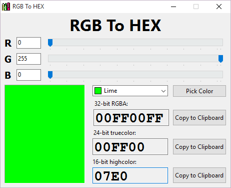

RGB To HEX
Description
Ce programme vous permet de connaître une couleur en hexadécimal à partir du code RGB (Rouge, Vert, Bleu).
À l'aide des "slider" il est aussi possible de trouver la couleur que l'on cherche.
C'est très pratique quand on veut connaître le code d'une couleur pour mettre sur sa page Web.
Une fois la couleur trouvée, on a qu'à appuyer sur le bouton "Copy to Clipboard" pour l'enregistrer et ensuite le coller à l'endroit approprié.
Pour aller plus vite, on peut se servir des presets.
En cliquant avec le bouton droit de la souris sur la zone de couleur, on peut ouvrir la fenêtre de couleur standard.
Il est aussi possible de cliquer sur "Pick Color" pour prélever une couleur sur l'écran.
Installation (Fichier compressé)
- Télécharger un des fichiers ZIP suivants:
- Extraire le fichier exécutable
- Double cliquer sur color.exe
- Amusez-vous bien

Historique des versions
Version 1.4.0
- Maintenant disponible pour Windows 64 bits
Version 1.3
Version 1.2
- Prélèvement d'une couleur sur l'écran
- Fenêtre À propos...
Version 1.1
- Highcolor (Haute couleur) 16-bit
Version 1.0
Licence
Copyright (c) 2001-2024 Crayon Application
Par la présente toute personne obtenant une copie de ce logiciel et des fichiers de documentation associés (le « Logiciel ») est autorisée à utiliser gratuitement le Logiciel sans restriction, et pourra notamment, sans que cette liste soit limitative, utiliser, copier, modifier, fusionner, publier, distribuer, sous-licencier et/ou vendre des copies du Logiciel, et permettre aux personnes à qui le Logiciel est fourni de faire de même, sous réserve des conditions suivantes :
La mention de copyright et l'avis d'autorisation ci-dessus doivent figurer dans toutes les copies ou portions substantielles du Logiciel.
LE LOGICIEL EST FOURNI « EN L'ÉTAT », SANS GARANTIE EXPLICITE OU IMPLICITE D'AUCUNE SORTE, NOTAMMENT, MAIS SANS QUE CETTE LISTE SOIT LIMITATIVE, LES GARANTIES DE QUALITÉ MARCHANDE, DE CONVENANCE À UN USAGE PARTICULIER ET DE NON CONTREFAÇON. EN AUCUN CAS LES AUTEURS OU LES DÉTENTEURS DU COPYRIGHT NE SERONT RESPONSABLES EN CAS DE RÉCLAMATION OU DEMANDE D'INDEMNISATION, ET ILS N'ASSUMERONT AUCUNE RESPONSABILITÉ, QUE CE SOIT DANS LE CADRE D'UNE ACTION CONTRACTUELLE, DÉLICTUELLE OU POUR TOUTE AUTRE CAUSE RELATIVEMENT AU LOGICIEL OU A L'UTILISATION OU AUTRES INTERACTION AVEC LE LOGICIEL.